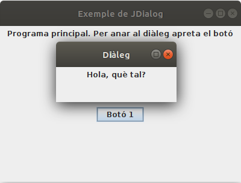

6.- Diàlegs
Els diàlegs són unes finestres (normalment més menudes que la principal, el JFrame) que fins i tot poden ser no redimensionables, i que poden ser modals, cosa que significa que fins que no es tanca el diàleg, no podem fer res en la finestra principal.
En crearem un d'exemple, però sobretot veurem dos components que són diàlegs i per tant suposaran obrir una finestra de diàleg de forma molt còmoda.
Aquest d'exemple és molt senzill. Només posem un text i esperem a que es tanque la finestra (modal). Observeu com en la definició del JDialog Finestra_dialeg estem cridant a la classe superior passant-li 3 paràmetres:
- El primer fa referència a la finestra de la qual depén, és a dir a son pare.
- El segon és el títol de la finestra diàleg.
- El tercer és un booleà que indica si ha de ser modal o no.
Des del JFrame principal Finestra invoquem al diàleg. En aquest exemple quan apretem un botó. I observeu com en el moment de construir el diàleg li passem la referència a l'actual finestra (this), per a que puga saber de qui depén. Si no haguérem volgut que fóra modal, hauria quedat tot molt més senzill, sense passar la finestra principal, i en el moment de definir la classe de la qual hereta Finestra_dialeg, que és JDialog, no caldria passar-li cap paràmetre.
class Finestra_dialeg(f: Finestra) : JDialog(f,"Diàleg",true) {
init {
setSize(200, 100)
setLocationRelativeTo(null)
val panell = JPanel()
panell.add(JLabel("Hola, què tal?"))
add(panell)
setVisible(true)
}
}
class Finestra : JFrame() {
val boto1 = JButton("Botó 1")
init {
defaultCloseOperation = JFrame.EXIT_ON_CLOSE
setTitle("Exemple de JDialog")
setSize(400, 300)
setLocationRelativeTo(null)
setLayout(GridLayout(2, 1))
val panell1 = JPanel(FlowLayout())
val panell2 = JPanel(FlowLayout())
add(panell1)
add(panell2)
panell1.add(JLabel("Programa principal. Per anar al diàleg apreta el botó"))
panell2.add(boto1)
boto1.addActionListener {
println("Obrint diàleg")
Finestra_dialeg(this)
}
}
}

Llicenciat sota la Llicència Creative Commons Reconeixement NoComercial SenseObraDerivada 2.5